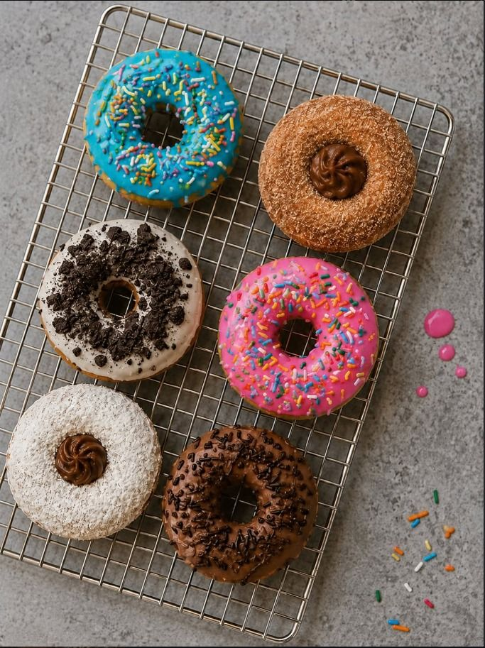
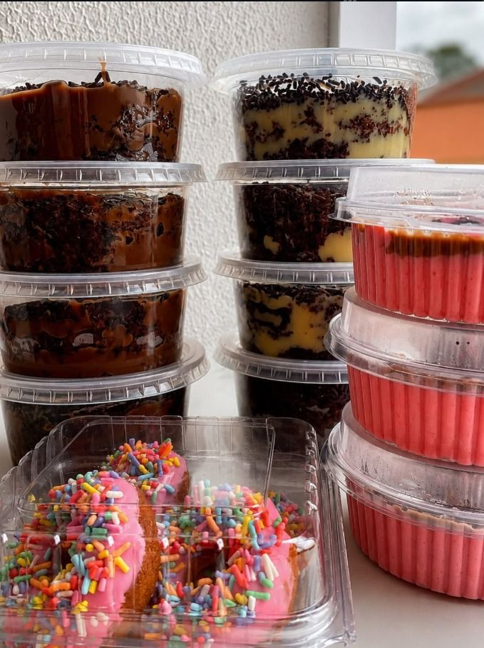
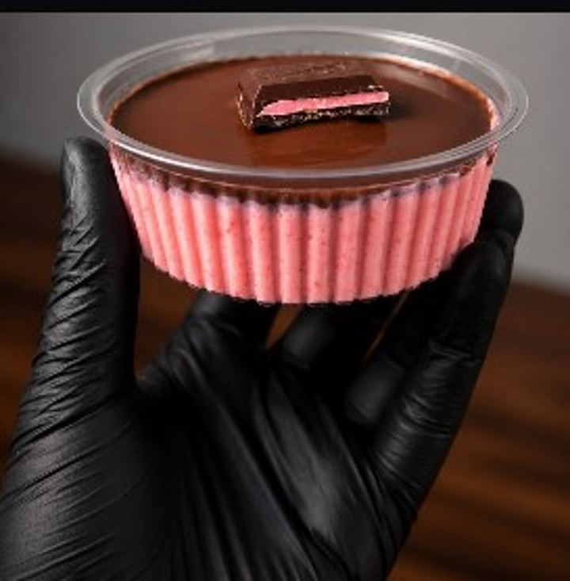
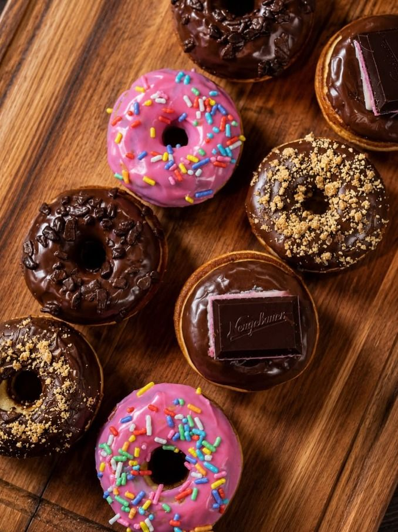
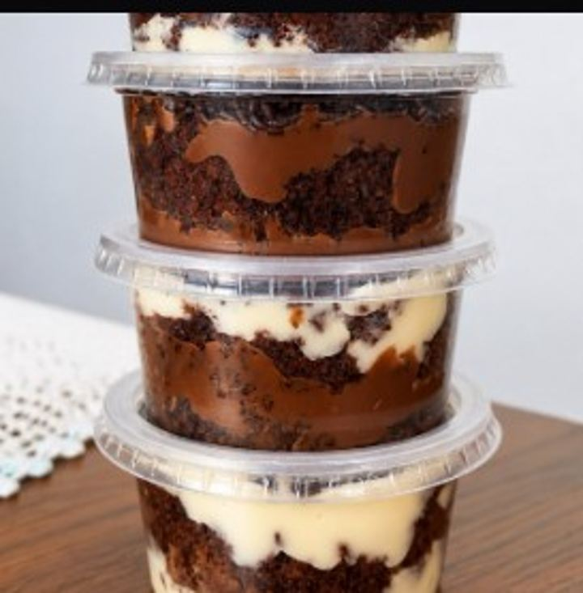
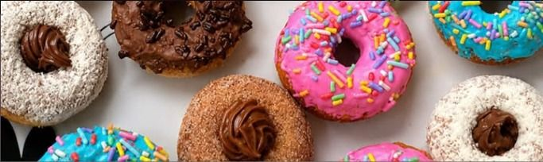
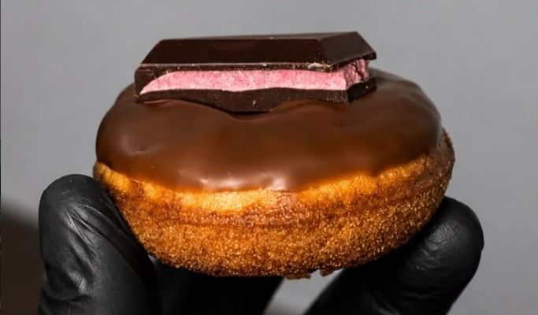

Doces que viram memória
Mini donuts, bolo de pote e mousse feitos à mão, sob encomenda em Porto Alegre.

Pequenos doces.
Grandes momentos.
Cada pedido é preparado artesanalmente, com cuidado em cada detalhe para deixar sua comemoração ainda mais especial.
O que sai do nosso forno
Consulte sabores e disponibilidade da semana direto pelo WhatsApp — montamos sua caixa do seu jeito.
O clássico da casa
Massa fofinha, banho generoso e cobertura na medida certa. Feitos em tamanho mini para experimentar mais de um sabor.
Consultar sabores e disponibilidade →
Camadas que contam história
Massa molhadinha, recheio cremoso e cobertura crocante — tudo em porção individual, pronta para presentear.
Consultar sabores e disponibilidade →
Leve, cremosa, irresistível
A pedida certa pra fechar qualquer mesa de doces — servida em potinho individual com um toque final delicado.
Consultar sabores e disponibilidade →Direto do nosso ateliê
Um gostinho do que sai da nossa cozinha toda semana.



Feito para o seu momento
Uma caixa de Donuts Loverss encaixa em qualquer ocasião — é só escolher a sua.
Aniversários
Docinhos para deixar a comemoração ainda mais especial.
Festas
Mini donuts e doces para compartilhar com todo mundo.
Presentes
Uma opção diferente para surpreender alguém especial.
Empresas
Encomendas para eventos e momentos corporativos.
Como funciona
Do pedido até a entrega, em cinco passos simples.
Escolha seus doces
Conheça nossas opções de mini donuts, bolo de pote e mousse, e escolha seus sabores favoritos.
Faça seu pedido
Entre em contato pelo WhatsApp e conte pra gente o que você precisa.
Personalizamos
Definimos juntos quantidade, sabores e detalhes da sua encomenda.
Produzimos
Seu pedido é preparado artesanalmente, com carinho em cada etapa.
Receba seu pedido
Entrega ou retirada, conforme combinarmos com você.
Muito mais que doces
A Donuts Loverss nasceu com o propósito de transformar ingredientes simples em momentos especiais.
Cada doce é preparado artesanalmente, buscando unir sabor, criatividade e uma apresentação que também faz parte da experiência — feito com carinho, em Porto Alegre.
Falar no WhatsAppQuem experimentou, aprova
Estava tudo maravilhoso! Os donuts fizeram o maior sucesso na festa.
Muito capricho e tudo delicioso, do bolo de pote à mousse.
Também postamos os bastidores por lá — mas seu pedido, sabor e entrega você resolve todo aqui.

Vamos deixar seu momento mais doce?
Faça sua encomenda pelo WhatsApp e monte sua caixa de sabores.
Fazer encomenda